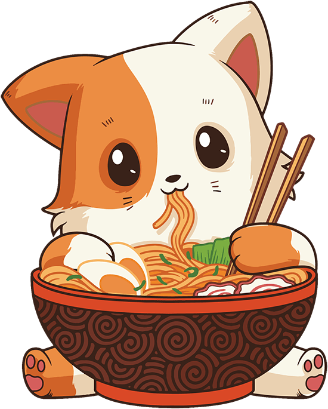

愛を込めて
∿∿∿∿∿∿∿
A bowl of love Japanese cuisine just for you
Ramen is a traditional Japanese noodle soup. It consists of Chinese wheat noodles served in a meat or fish-based broth & uses toppings such as sliced pork, nori, menma, and scallions.

Ramen is a traditional Japanese noodle soup. It consists of Chinese wheat noodles served in a meat or fish-based broth & uses toppings such as sliced pork, nori, menma, and scallions.